Att sätta kompassen – meningsfulla mål och hävstänger
Att utforska utmaningar på meningsfulla och finurliga sätt
Pionjär, förändringsagent, innovationsledare – oavsett titel är du van vid att utmana det invanda och driva förändring utanför de etablerade ramarna. Ofta i medvind, ibland i motvind – och för det mesta någonstans däremellan.
Det kräver förmågan att navigera kreativt, inte bara för att området du verkar i är komplext och föränderligt, utan också för att du behöver agera inom givna förutsättningar.
Transformationsarbete är sällan linjärt. Det rymmer kompromisser och nya möjligheter, steg framåt och bakåt – och ibland i helt oväntade riktningar. Kanske måste du arbeta med det som faktiskt finns tillgängligt, även när behoven i din organisation pekar åt ett annat håll.
Det här kapitlet handlar om hur man driver transformationsprocesser i praktiken.
Vi tar upp:
- Hur man skapar riktning genom tillfälliga och situationsanpassade målbilder.
- Hur man kan arbeta strategiskt med att fånga, forma och använda de möjligheter som uppstår längs vägen.
- Hur man hanterar parallella processer och växlar mellan att förstå system och samspela med människor.
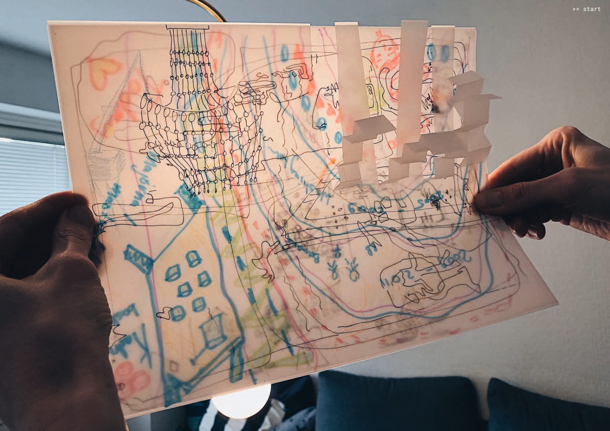
Kartor kan se ut på många sätt, utvecklas över tid och vara svårare och lättare att tolka. Hur kan en grupp sätta mål att sträva mot, och hur kan dessa kommuniceras för att ge mening?
Acceptera att riktningen kommer ändras
För många är något av det mest frustrerande man får höra i ett arbete eller en process: ”Vi vet inte riktigt var det här kommer att landa”. Men att det är oklart hur en lösning skulle se ut, eller om vi ens kan tala om en lösning eller ännu vet vad vi kommer att lära oss, det betyder inte att ett utforskande är som att vara som ett skepp som driver hjälplöst på havet. Även om det kan verka som att vi är myror som till synes springer i alla riktningar, eller att vi ska göra vad som helst utan eftertanke enligt devisen ”misslyckande är lärande”.
Istället handlar det om ett arbetssätt där du är medveten om och accepterar att riktningen förändras i takt med att du lär dig av det system du jobbar inom och att du får och plockar in nya insikter, behov och förutsättningar längs vägen. Det kommer aldrig att finnas ett bästa steg att ta – men alltid ett nästa steg som innebär lärande.
Nya prioriteringar kan uppstå, kontexten kanske har blivit mogen för mer radikala mål, en ny konstellation aktörer har andra idéer, någon möjliggörare har dykt upp, skiften har gjort att människors behov ändrats.
”Att arbeta utforskande är inte att sakna riktning – det är att erkänna att vi inte har hela kartan än. Det är ett förhållningssätt där vi prövar, lyssnar, backar och justerar i takt med att vi lär oss mer. Det handlar om att möta ovissheten som något fruktbart – snarare än något att undanröja”.
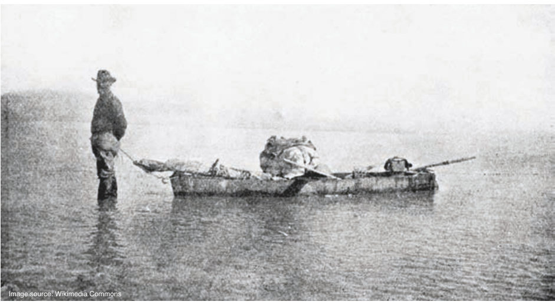
Låt framtidsvisionen och den etiska kompassen guida
Ett sätt att hantera osäkerhet i en framväxande process med oklar riktning, är genom att skapa temporära ramar, målbilder, framtidsvisioner, riktningar, frågeställningar och experiment. Man kan skapa tydlighet samtidigt som man är väl medveten om att den bilden kommer att ändras.
Ett system kan göras mer förutsägbart genom att försöka forma vägen i enlighet med hur vi vill att den ska vara, genom de otaliga val som görs i ett emergent arbetssätt. Även om vi inte kan veta någonting om hur framtiden kommer se ut, har vi ändå en idé om vart vi vill, om vilka samhällsproblem vi vill lösa. Ett mål kan vara visionen av den alternativa, bättre värld du vill bidra till att skapa. Hur skulle människor kunna leva? Hur skulle de känna sig i en annan tillvaro?
Du skapar ett bredare utrymme för möjligheter genom att sätta gränser inom vilka nya saker kan växa fram. Så – du vet fortfarande inte exakt vart du är på väg, men du kan känna dig trygg i att du rör dig mot något du vill nå.
Man skulle kunna säga att det handlar om att låta den etiska kompassen vägleda. De värden vi tycker spelar roll är trögrörligare och hjälper dig att avgöra om vi rör oss i det vi uppfattar som rätt riktning.
Mål som känns meningsfulla att samlas kring
Ofta vill medarbetare ha en tydlig målsättning och förstå hur de kan bidra till den, för att inte famla i blindo med sitt engagemang. Då behöver man kunna visa kopplingen. Exempelvis, ”på vilket sätt kommer det du gör just nu, att förändra brottsutvecklingen”?
Om den kopplingen inte är tydlig och ger tillräckliga skäl för att vi medvetet ska prioritera det området, då måste vi sluta göra det vi tänkt ut. Därför finns det en vikt av att vara tydlig med själva riktningen – särskilt när allt är osäkert, och speciellt i en transformation: ”Jag vill att du går i den här riktningen även om vi inte är säkra på effekten. Vi har modet och viljan att göra det, så låt oss”.
Man behöver tro på och vara lojal med målet. Men det kan hända att de som sätter målen inte har insikterna som behövs för att sätta bra mål, för att de kanske tänker för kortsiktigt, eller är kvar i gamla tankesätt. Om man inte håller med om målet så får man försöka påverka det så mycket man kan, eller hoppa av arbetet.
Hur skapar man de här temporära målbilderna? Vi vet att vilka målbilder vi än har så kommer de att ändras i takt med ökande insikter, förändrade förutsättningar och prioriteringar – men vi kan ha målbilder med olika tidshorisont eller ambition.
Vad som händer i praktiken blir ofta till en kedja av kompromisser, och kompassen får kanske vara just det – en tillfällig kompromiss mellan:
- Det som skapar mening: En övergripande framtidsvision, önskad riktning - målbilden av den värld vi vill skapa . Vilken riktning ger oss som grupp energi och meningsfullhet? Vad är vår gemensamma etiska kompass?
- Hävstångspunkter i systemet: Dessa kan hittas med hjälp av djup systemförståelse, kopplat till målbilden och det område vi har att göra med. Vari ligger de stora utmaningarna? Och vilka är punkterna där en liten insats kan göra stor effekt?
- Möjlighetsfickor: Vilka är möjligheterna som öppnats upp, som gör att vi kan ta steg framåt, ett efter ett? Vilka förutsättningar behöver skapas för att vi ska kunna förändra något alls? Dessa fickor kopplar till yttre förutsättningar, makt, resurser, stöd och kreativa idéer, samt den kunskap, perspektiv och insikter som vi har om världen. Men även till oss som individer –individer med rätt energi, ork och agens behöver mötas för att ta vara på och utforska möjligheter.
Nästkommande avsnitt behandlar dessa delar med mer detaljer. I kapitel 7 återkommer vi till hur man kan stötta människor i den ovisshet många kan uppleva.
Kompass i komplexitet - skapa riktning och rörelse
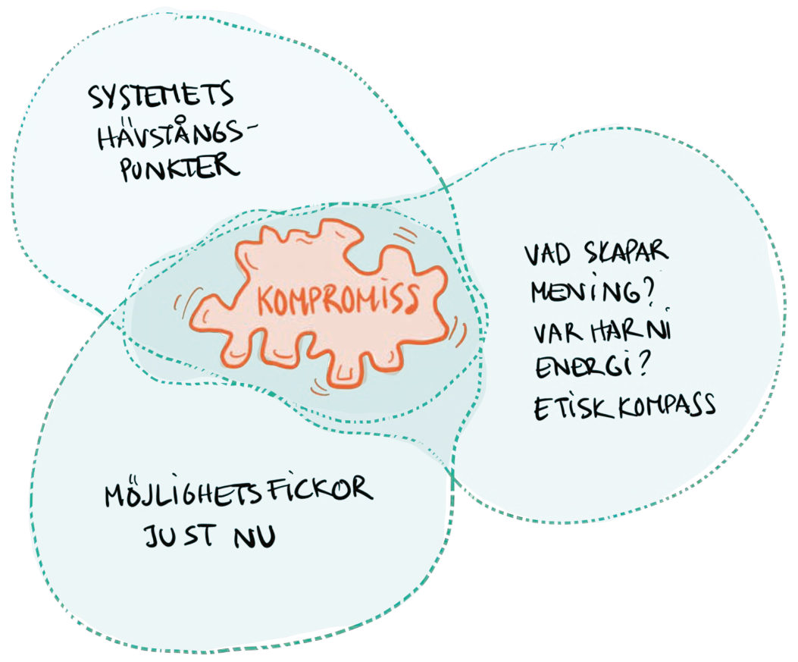
Exempel på rörliga mål i ett policy-labb: Hur skapar vi trygghet kring processen, vart landar vi
och vilket värde skapas?
I en ansökan om ett policy-labb om en övergång till hållbart skogsbruk , behövde vi förtydliga frågan kring rörliga mål, för att sätta rätt förväntningar bland deltagare och finansiär. Samtalen landade i detta:
”Det är viktigt att notera att i den här typen av utforskande processer är målet rörligt. Resultatet kommer att se annorlunda ut kopplat till de behov, insikter och perspektiv som upptäcks och utvecklas längs vägen, och var deltagarna gemensamt väljer att lägga sitt fokus. Det kan vara lockande att utlova en färdigskriven policy som resultat, men risken är att man skjuter vid sidan av det som är viktigt.
Policylandskapet som utforskas kan vara mer eller mindre moget, komplext och påverkningsbart, normer och traditioner kan vara mer eller mindre cementerade, och viktiga aktörer kan ha mer eller mindre agens att skapa förändring. Vidare, att få delta i en samverkande policyprocess kan i sig själv vara engagemangsskapande hos deltagare, varför policylabbet kan få effekter även utanför det som är direkt policy-relaterat”.
”När du skriver en doktorsavhandling hänger oket av den perfekta forskningsfrågan över dig dag och natt. Såklart måste man väl veta exakt vad det är man forskar om? Sanningen är att man ofta känner att man drunknar i komplexiteten. Min handledare avdramatiserade det med att tala om min ”jourhavande forskningsfråga”, som hon skulle kunna fråga om mitt i natten. Det tog ner prestationsångesten totalt, för den frågan gick ju alltid att ändra. Och det gjorde jag också, fram till minuterna innan jag skickade avhandlingen till tryck”.
Exempel från praktiken
Exempel: rörligt fokus i en öppen innovationskontext
Vi har tidigare nämnt forskningsprojektet om cirkulär transformation inom byggbranschen som byggde på designmetodik, där en iterativ framväxande process är central.
Under projektets gång jobbade vi aktivt med perspektivtagande och att navigera föränderliga mål. Målen handlade både om vart deltagarna ville, vad de ville uppnå – men också om HUR projektet skulle genomföras och vad man skulle fokusera på i gemensamma aktiviteter.
En av de första aktiviteterna handlade om att försöka förstå hur de olika deltagarna såg på målbilden, både gällande slutresultat och processen för att nå dit. Hur tänkte man sig komma fram till tydliga affärsmodeller? Hur såg man på att experimentera mer hypotetiskt; att skapa gemensamma framtida erbjudanden eller att använda konstellationen för samlärande, utan att nödvändigtvis fortsätta jobba ihop efteråt. Bilderna skilde sig mycket åt.
Projektet hette ”Prototypa digitala cirkulära affärsekosystem”, så det fanns en tanke om att lägga mycket tid på att jobba konkret och fysiskt. Det fanns också en tanke om att lägga ungefär halva tiden på det som pågick mellan organisationerna, och att de skulle stötta varandra med interna frågor genom att dela inspiration.
Men - som de andra exemplen från samma projekt visat, så var komplexiteten och otydligheten långt mycket större än forskarna insett. Man förstod heller inte hur ”tidigt” i ekosystemsformerings-processen man befann sig, på alla nivåer. Såväl inom hela projektets gemensamma system. som inom varje deltagande organisations eget.
Vid projektets slut när vi började teoretisera kring vad som egentligen hänt kopplat till designteori, såg vi att projektets aktiviteter och fokus egentligen rört sig mellan ett antal ytterligheter. Att tydliggöra dessa gav många idéer för hur man i framtida projekt med den här medvetenheten kan tänka annorlunda kring både facilitering och workshop-upplägg.

Fokusera på hävstångspunkter
I kapitel 3 beskrev vi komplexa, adaptiva system som levande på vissa sätt, genom att de är självlärande, återkopplande och genom att förändringar formas av underliggande nivåer.
En kraftfull metod är att att arbeta med och fokusera på vad systemanalytikern, pionjären och författaren Donella Meadows kallar för hävstångspunkter - områden där små insatser kan få stora effekter. Om vi enbart försöker åtgärda symptom på ytan kan vi hamna i ett evighetsarbete utan verklig förändring. För att få systemeffekter krävs att vi hittar och använder dessa hävstångspunkter.
Ibland kan man jobba på strategisk nivå där man har möjlighet att ifrågasätta sånt som en organisations hela vision, där man har möjlighet att nå beslutsfattare på flera nivåer. Ibland får man jobba mer som en hacker för att hitta vägar framåt (se avsnittet om möjlighetsfickor). Själva förändringsarbetet brukar dock vara svårare ju mer djupgående förändringar man eftersträvar – särskilt när det gäller att utmana förhärskande normer eller etablerade sanningar.
Att ha en medvetenhet om och förståelse för, var i transformationen man befinner sig, innebär en slags transformations-ntelligens. Den handlar om förmågan att notera vart man ska rikta sin uppmärksamhet, och vad som är möjligt att göra.
En radikal utmaning är inte samma sak som en hävstångspunkt. När man förstår systemet runt utmaningen, kan man identifiera de hävstångspunkter som är nycklar till förändring. Man landar ofta i en kedja av omformulerade problem, där själva adresserandet av hävstångspunkten blir en utmaning i sig själv.
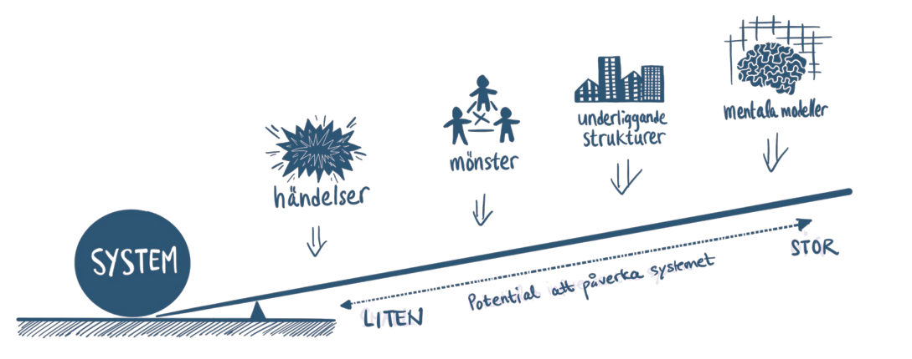
Exempel: hävstångspunkter i praktiken
Skatteverket har lyckats ta sig an förändring som en del av ett komplext system. Genom att hitta rätt nivå att påverka på – och fokusera på sitt syfte och självbild – kunde de skapa verklig förändring i grunden. Vad de gjorde var att gå ner på djupet och utgå från själva syftet och synen på sig själva, för att få till ett fundamentalt skifte.
Från att fokusera på att samla in skatt och räkna fel, så omvärderade de sin syn på vad som är ett bra resultat – till att säkerställa finansieringen av den offentliga sektorn. Denna bredare och mer grundläggande definition av syftet, har gett dem frihet att agera på en djupare nivå.
De gjorde en kulturresa som bland annat handlade om att gå från att jaga skattebetalare som gör fel, till att göra det enklare för dessa att göra rätt. Digitalisering var en viktig del i förändringsprocessen – men hur den faktiskt användes berodde på hur man formulerade problemet. Med andra ord: samma digitala verktyg kan få helt olika effekter beroende på vad vi försöker lösa.
Detta kan jämföras med myndigheten Transportstyrelsen, som definierar sitt uppdrag som att "utforma regler och följa upp så att de efterlevs". Denna formulering placerar dem på en högre systemnivå och begränsar deras handlingsutrymme. Deras syfte blir mer specifikt och mindre flexibelt, vilket påverkar förmågan att navigera i en komplex och föränderlig miljö.
Hitta, utnyttja och skapa möjlighetsfickor
Möjlighetsfickor – hur pionjärer får förändring att hända
Ett sätt att tänka på transformation som en framväxande process, är som vi redan nämnt att tänka på och identifiera det vi valt att kalla ”möjlighetsfickor” (pockets of possibility). Vad innebär det?
En möjlighetsficka uppstår när en kombination av rätt personer, platser och omständigheter gör det möjligt att utforska, uppleva, ifrågasätta eller skapa något som bidrar till att driva en rörelse framåt.
Att identifiera och ha modet att göra något med möjlighetsfickor, kan katalysera förändring - genom att skapa nya förutsättningar. Här kan sådant som fördjupade relationer, en bredare förståelse, nya känslor och kompetenser, nya arenor och former för samarbete , vara av värde.
Förekomsten av en möjlighetsficka är en möjlighet till frihet, som i sig kan skapa mening. Om man upplever meningsfullhet har man lättare hitta fickorna. Vi får inte glömma hur viktigt det är med hopp.
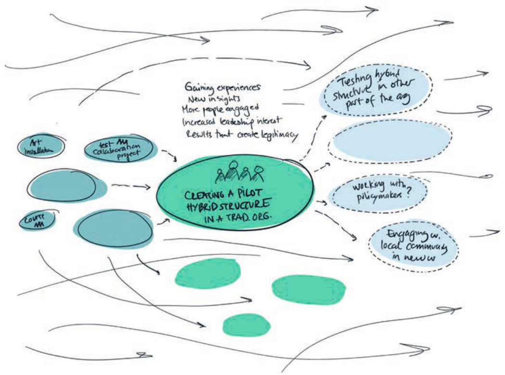
Hur uppstår möjlighetsfickor?
“Forget your perfect offering, There is a crack, a crack in everything That’s how the light gets in.”
Leonard Cohen
Där vissa ser sprickor, ser andra öppningar. Det annorlunda är det som erbjuder möjligheter. När metaller och andra grundämnen smälts samman till nya legeringar uppstår nya strukturer – ofta med små oregelbundenheter som en del av det nya materialet (t.ex. dopade halvledare som möjliggör transistorn och all modern elektronik). Nya möjligheter kan finnas i en anomali, något utöver det vanliga, något nytt eller överraskande som inbjuder till utforskande.
Exempel på möjlighetsfickor:
- En ny finansieringsmöjlighet, såsom en utlysning för forskningssamarbeten.
- Möjligheten att testa en hybridorganisation som pilotprojekt.
- En ledare som öppnar upp för alternativa arbetssätt.
- En fysisk plats som möjliggör spontana samarbeten.
- En kulturell upplevelse som öppnar upp för nya typer av samtal.
- Friktion/motstånd som tvingar fram en omstart i en grupprocess.
En speciell typ av möjlighetsficka handlar om plats: En lokal kontext där det finns engagemang eller utrymme att testa samarbetsformer, uttryck och lösningar i liten skala. Det kan handla om testbäddar, eller en mindre ort som är framåtriktad.
Det som händer i en ficka, kan öppna en mängd andra fickor genom att skapa nya förutsättningar.
Möjlighetsfickor dyker inte alltid upp av en slump. Kanske fanns den där hela tiden – bara att du inte såg den. Kanske blev den möjlig först när något annat föll på plats. En insikt, en relation, en förändring i perspektiv.
Det som tidigare var osynligt blir plötsligt tydligt – för att du nu har ord, begrepp eller erfarenhet nog att se det. En möjlighetsficka kan vara ett helt nytt rum utanför de gränser vi tidigare tagit för givna. De kan handla om relationer och tillit, teknik och kompetens, nya strukturer eller organisationsformer.
De kan öppnas på olika nivåer – vara små och lokala eller stora och systemiska. Vägarna kan vara långsamma eller snabba, ibland allt på en gång. En ficka kan leda till ett nytt tankesätt, en fysisk lösning eller en övertygad beslutsfattare.
Men ibland vissnar förändring i det gamla systemets maskineri. Då lever det ändå vidare – i människor, som bär lärdomar och jäklar anamma in i nästa sammanhang.
Att navigera transformation handlar inte bara om att ta vara på möjlighetsfickor – utan också om att skapa förutsättningar för att nya ska kunna uppstå.
Med andra ord, att skapa förutsättningar för att det arbete ska ske som du fortfarande inte vet vad det är, men som du har en känsla av att det kommer att leda i en bra riktning. En slags lös infrastruktur för emergens!
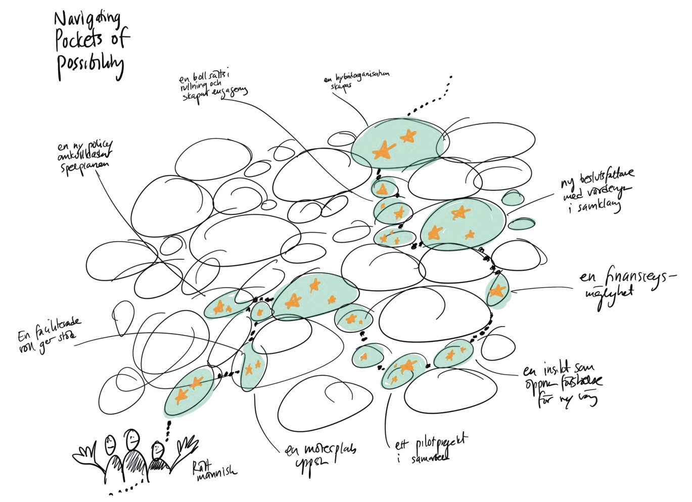
-
Utveckla förmågan att upptäcka och skapa möjlighetsfickor
Kan vi ens tala om en väg när processen är framväxande? I nuet kanske vägen framåt inte är tydlig, men i efterhand kan det vara möjligt att spåra stigarna och se vad som ledde fram till nästa möjlighetsficka. Vad var det som hände som gjorde att nästa steg blev möjligt att ta? Vad kan vi lära oss av det, på ett sätt som hjälper oss framåt?
Träna upp din observationsförmåga - se om du kan vara mer uppmärksam på dessa fickor, och vara öppen för nya perspektiv som får dig att se och skapa fickor som tidigare inte fanns.
Att reflektera över de steg som redan tagits, kan ge en mer utvecklad syn på vad andra fickor skulle kunna vara, och hjälpa dig att skapa utrymme för nya.
Du kan också reflektera över vad för slags hinder som uppstår och bromsar riktningen framåt, och hur man kan skapa sätt att komma förbi dessa – det är också ett sätt att kratta för fler fickor. Hur kan du hoppa emellan och bygga bryggor mellan alla fickor du hittar?
Exempel från praktiken
Exempel på möjlighetsfickor
Rätt förutsättningar skapade oväntat pilotprojekt:
Det Vinnova-finansierade forskningsprojektet ”Prototypa Digitala Cirkulära Affärsekosystem”, fungerade i sig självt som en möjlighetsficka. Aktörer från tre företag fick utforska designinspirerade sätt att arbeta och samarbeta inom sitt ekosystem, samt att ta fram framtidsprototyper av nya ekosystem.
Utanför projektet var det svårt för deltagarna att hitta en arena för sådan samverkan, men genom forskningsprojektets struktur och legitimitet kunde de engagera sig i ett öppet utforskande, trots att deltagandet inte gav någon direkt ekonomisk ersättning.
Men denna möjlighetsficka gav i sin tur upphov till nya fickor. Halvvägs in i projektet gick deltagarna igenom en fas av friktion och frustration – en "desperationens dal" där olikheter och osäkerheter blev tydliga. Det var genom att hantera denna friktion som en mer ärlig och djupgående dialog kunde uppstå kring vad som faktiskt var viktigast. Detta ledde till omprövning av vissa lärdomar och insikter, och när förutsättningarna föll på plats fick aktörerna energi att göra något oplanerat men kraftfullt – de tog initiativ till ett nytt helt oplanerat pilotprojekt.
Detta illustrerar hur transformation sällan sker linjärt eller enligt en förutbestämd plan. Istället kan spänning och motstånd bli en katalysator för förändring, när det finns tillräckligt med tillit och engagemang för att ta nästa steg.
Själva pilotprojektet var ett samarbetsinitiativ där företagen testade de praktiska processerna för att få till ett cirkulärt arbetssätt, med fokus på materialåtervinning och digital spårbarhet inom byggsektorn.
Möjligheten uppkom när ett av de deltagande företagen bjöd in de andra i att omvandla en lokal i en befintlig kontorsbyggnad, ett projekt som var ”lagom” för ett test i liten skala: lagom storlek, tidsram, logistisk komplexitet, ytor för att prototypa lagring och lagning, lagom risk.
En tydlig lärdom var att ”djävulen sitter i detaljerna”, och man stötte på en mängd situationer som inte hade gått att förutse utan ett skarpt test – sånt som hur den nya processen krockade med (och behövde docka in i) de krav på dokumentation som fungerade som grindar i företagets interna projektprocess.
En vändning och nya möjligheter kom med en ny deltagare som introducerades i projektet – en nyanställd på ett av de andra företagen, en person med en helt annan professionell bakgrund. Hans nyfikenhet på en specifik teknologi och hans tidigare kontakter, gav företaget möjlighet att testa saker som annars inte hade varit möjliga.
Genom pilotprojektet kunde de också uppleva var nånstans nya typer av friktion kunde uppstå, och se hur detta utmanade deras syn på sin roll i ekosystemet. De fick ompröva vilket ansvar de kunde – och ville – ta i den framväxande cirkulära ekonomin. De insåg också att de ganska snart kom till en gräns där de behövde blanda in sina juridiska avdelningar trots att de bara testade i liten skala i ett pilotprojekt.
Att få med tidiga följare i en kulturförändring
Virginia Hamilton, design-utbildare, policyexpert och systemledare inom arbetsmarknadsområdet, har arbetat på både delstatlig och federal nivå inom Department of Labor (arbetsmarknadsdepartementet) i USA i över 40 år. Hennes ambition de senaste drygt 15 åren har varit att införa ett mer människo-centrerat designperspektiv (design thinking) hos första linjens personal inom arbetsmarknadsfrågor, t ex arbetsförmedlingar och vuxenutbildning. Detta för att demokratisera innovation och säkerställa att tjänsterna verkligen fungerar för människor i utsatta situationer. Initiativet startade efter finanskrisen 2008, när många plötsligt befann sig i helt nya omständigheter i livet. Virginia delar några insikter om förändring genom att använda metaforen möjlighetsfickor:
"Jag tänker ofta på den adoptionskurva inom innovation, som funnits sedan 60-talet – den som talar om innovatörer, tidiga följare, majoriteten och eftersläntrare. Jag ser att den passar väldigt väl även i detta sammanhang. Det handlar om att nå brytpunkten. Genom att få med innovatörerna och de tidiga följarna, kan vi skapa dessa små möjlighetsfickor. När de lyckats, kan den tidiga majoriteten sen se att det de gjort, faktiskt fungerar. Små förändringar leder till nya förändringar – och ganska snart har hela kulturen förändrats. Teorin, och den empiriska forskning som stödjer den, visar att om du verkligen vill driva förändring behöver du bara nå 13 procent av dem du vill nå. När du väl kan visa att något fungerar kommer resten att följa. Det kan ta sex månader eller tre år, men de andra kommer sen att följa efter”.
Vi kan använda möjlighetsfickor på ett smart sätt – genom att skapa tidiga vinster som exempel, och sedan få med den tidiga majoriteten."
Att använda extern uppmärksamhet för att skapa legitimitet.
I den amerikanska vårdorganisationen Kaiser Permanente hade ett internt innovationsteam svårt att hitta finansiering för sitt arbete, trots sina framgångar med att skapa lösningar som vid implementering räddade liv (räknat i hundratal), minskade vårdskador och förbättrade patientupplevelsen.
Teamet uppmärksammades dock i artiklar i tidskrifter som FastCo och Harvard Business Review, samt i boken Change by Design av Tim Brown (en central bok i den tidiga design thinking-rörelsen). Eftersom teamet därmed fick erkännande utanför sin organisation så kunde de använda uppmärksamheten för att skapa legitimitet internt, och därmed säkra stöd och finansiering.
Arbeta med medvetna begränsningar
När en möjlighetsficka uppstår så kan det vara lockande att dyka djupt för att utforska. Carl Heath på RISE påminner om vikten av att medvetet forma och begränsa den tid och rum vi har för förnyelse:
“Parkinsons lag säger att arbete utvidgar sig för att fylla den tid som finns tillgänglig för dess slutförande. Fenomenet innebär att uppgifter tenderar att bli mer komplexa och tidskrävande än nödvändigt när tidsramen är generös, oavsett uppgiftens verkliga komplexitet. Genom att omfördela tid och skapa rum för transformation både i tid och plats, skapas möjligheter för lärande”.

När antagonister ser möjligheter i våra svagheter
"Inom brottsbekämpning och försvar är det inte bara de egna möjlighetsfickorna som är i fokus, där drivs arbetet också av hur en motståndare aktivt utnyttjar våra sårbarheter.
Begreppet innovation används ofta i ett sammanhang av utveckling och positiva effekter för oss själva och vårt samhälle. Vi tillskriver sällan en motståndare eller fiende rollen som innovationsledare. Men om man studerar organiserad brottslighet, statsfinansierad påverkan eller vad som sker i krig, så framträder tydliga komponenter av innovationsledningssystem.
Ett tankeexperiment kan därför vara att betrakta mostråndarens förmåga till innovationsledning, och utifrån det agera proaktivt i de delar där motståndaren inte har samma förmåga som vi har i vårt eget innovationsarbete. Det blir också ett sätt att stärka de resurser som ofta finns i ett demokratiskt och öppet innovationssystem.
Detta resonemang går för övrigt att utvidga till de globala ekonomiska och geopolitiska skeenden vi ser just nu. Då uppstår stora och nödvändiga frågeställningar om vilka spelregler vi vill ha och vilka värden vi vill stå upp för".
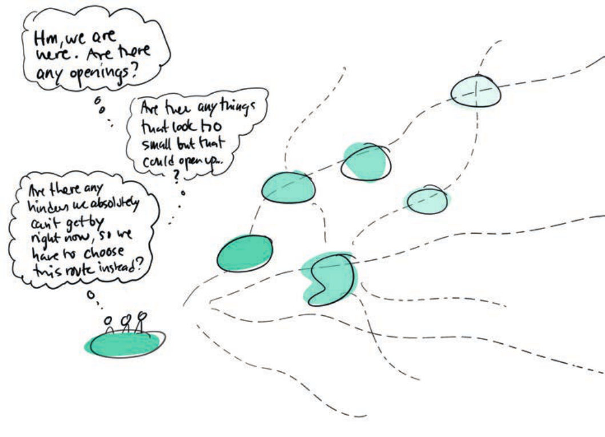
Reflektera över dina egna möjlighetsfickor
Växla mellan systemnivåer
Förstå samspelet mellan de som påverkar och påverkas
Vi har genomgående tryckt på behovet av att inkludera och röra oss mellan flera systemnivåer: från fågelperspektiv till små detaljer.
Ibland är det lätt att fastna på en nivå, och det är inte ovanligt att den är strategisk och abstrakt. Samtidigt har vi nämnt vikten av att se människor i transformation som subjekt som genom sina handlingar påverkar transformationsprocesser och utfallen av dessa, på de mest intrikata, oväntade eller självklara sätt.
Att satsa på att förstå människor hjälper oss att hitta innovativa vägar framåt, och kan bidra till att vi slipper en del huvudvärk på vägen.
Att sätta människor i centrum betyder att försöka förstå:
- Vad driver och motiverar dem? Vad är de oroliga för, vad gläds de av?
- Vad behöver de i den situation de befinner sig i - i livet, på jobbet, i samhället?
- Hur påverkas de av kontexten och vice versa? Vilken påverkan har de på människorna omkring sig?
Detta gäller alla de roller vi ser i transformation – det gäller för dem som driver, motverkar, främjar, bidrar eller vägrar flytta på sig. Men det handlar också om de människor som påverkas av transformationen och kanske inte har en så tydlig roll. De kan lätt glömmas bort.
Ett exempel – kreativ övning kring försvarets omställning: Vid ett utbildningstillfälle kring innovationsledning i försvarssammanhang, jobbade en grupp deltagare med utmaningen kring att på kort tid bygga upp fler militärbaser runt om i landet – på grund av det förändrade säkerhetsläget och Sveriges inträde i NATO. Det var lätt för deltagarna att fastna på strukturell nivå och se till logistik, ekonomi, bemanning, och praktiskt genomförande.
I en övning fick de istället ta ett människo-centrerat perspektiv och fokusera på några av de individer som berörs av etableringen av en ny militärbas. De föreställde sig en ung amerikansk soldat – Forrester - som befann sig i inre Norrland under ett år, som började må psykiskt dåligt och betedde sig illa på orten. De såg framför sig hur det påverkade en ung tjej i samhället – Anna - och hennes känsla av trygghet. Efter att ha jobbat kreativt med olika sätt att hantera de sociala situationer som hade kunnat uppstå, och med att hitta lösningar i lokala sociala strukturer, så diskuterade de hur sådana här aspekter i praktiken kan omkullkasta eller möjliggöra en etablering. Detta arbetssätt tar inte bort vikten av att ha ett systemperspektiv, men visar på hur ett fokus på människor och relationer (och framförallt att kunna växla mellan perspektiv), kan skapa en medvetenhet om både möjligheter och hinder, som leder framåt på ett fruktbart sätt.
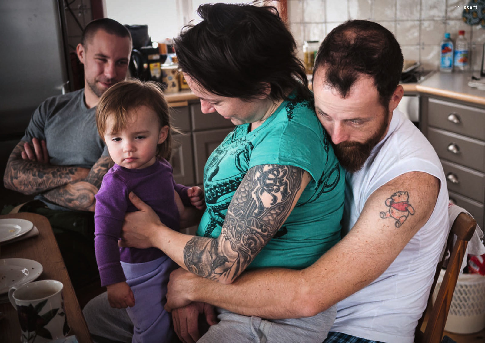
Vad vet vi egentligen om människors situation, bevekelse-grunder, drömmar? Hur påverkas de av kontexten de verkar och lever i? Empati, inlevelseförmåga och lyhördhet kan behöva tränas upp.
Hur gör man för att förstå människor?
För att förstå människor kan vi ta utgångspunkt i designorienterade arbetsätt. De bygger på att samla insikter genom en kombination av etnografiskt inspirerade metoder. Exempelvis kvalitativa (intervjuer, observation, att själv uppleva en situation), kvantitativa (enkäter, tillgång till statistik) och "desktop research” (exempelvis rapporter, tidningsartiklar, sociala medier).
Om man söker konkreta verktyg så kan man hitta dessa inom t ex UX-design, tjänstedesign, design thinking. Vi vill dock poängtera vikten av erfarenhet och kunskap – till exempel förmågor till observation, interaktion med människor, sensemaking, meaning-making, att kunna formulera insikter baserat på den data man samlat in.
Om detta känns ovant kan man välja att samarbeta med professionella – men det finns absolut ingenting som hindrar att man försöker på egen hand, det finns ingen perfekt nivå. Däremot ger kunskap och erfarenhet vanligtvis mer intressanta och relevanta insikter.
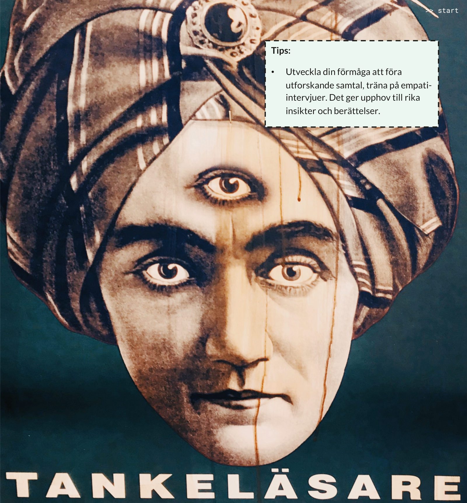
Som vi har visat fungerar det ibland bättre att utgå från frågeställningar som bottnar i systemets komplexitet, och ibland istället från sådana som utgår från djupt mänskliga behov.
Det är i växlingen mellan system och människa som något nytt kan uppstå. När vi lyckas växla mellan helhet och detaljer, strategi och känsla, så kan vi få syn på sådant som annars skulle ha gått oss förbi. Vi kan förstå hur förändringar påverkar människor i deras vardag, men också hur människors behov och handlingar i sin tur påverkar system. Det är i dessa växlingar som det riktigt relevanta och det genomförbara formas.
Vi kan dra nytta av våra olika sätt att fungera. Alla har inte samma sätt att röra sig mellan systemnivå och det konkreta vardagliga – och det är heller inte nödvändigt. Vissa tänker naturligt i helheter, andra är bättre på att få syn på människors känslor eller praktiska detaljer. Det viktiga är att vi kan lyssna på varandras perspektiv och att vi arbetar i team som kompletterar varandra. Då behöver inte alla kunna allt – men tillsammans kan vi se mer.
Team med olika perspektiv möjliggör transformation. När någon är stark på system och struktur, och någon annan har en intuitiv känsla för människor så kan det skapa friktion – men också stor kraft. Transformation kräver denna mångfald, inte bara av perspektiv utan också av språk och arbetssätt. Då kan något nytt ta form som varken var möjligt att tänka ut strategiskt eller känna fram enskilt.
*Point of View (POV) är ett verktyg inom design thinking som används för att formulera en fokuserad och empatisk problemdefinition utifrån användarens behov, insikter och sammanhang. Källa: d.school (Hasso Plattner Institute of Design, Stanford University):
Zooma in och ut,
kombinera perspektiv - tillsammans ser vi mer
Systems Thinking Guide är en introduktion till systemtänkande och hur det kan tillämpas för att förstå och förändra komplexa system. Det betonar helhetsperspektiv, återkopplings-mekanismer och dynamisk anpassning.
Exempel: En kommun försöker förbättra folkhälsan. Istället för att enbart fokusera på vårdinrättningar analyseras hur bostadsområden, sociala nätverk, tillgång till grönområden och arbetsförhållanden påverkar invånarnas hälsa.
Systems Change Canvas används för att förstå och driva systemförändringar genom att analysera relationer mellan olika aktörer och processer. Modellen hjälper till att identifiera vilka insatser som krävs för att förändra ett komplext system.
Exempel: Ett utbildningssystem vill bli mer inkluderande. Istället för att bara ändra läroplanen analyseras hela ekosystemet – från lärarutbildning och finansiering till hur elever och föräldrar påverkar skolans struktur.
Systems Modeling Guide hjälper till att kartlägga och förstå komplexa system genom att visualisera relationer och återkopplingsslingor. Detta kan avslöja dolda mönster och peka på strategiska förändringspunkter.
Exempel: En sjukvårdsorganisation analyserar varför akutmottagningar är överbelastade. Genom systemmodellering upptäcker de att en brist på vårdplatser i primärvården leder till fler akutbesök. Lösningen blir att stärka primärvårdens kapacitet.
Ice berg Canvas används för att förstå varför vissa problem verkar återkomma och vara svåra att lösa. Modellen visar att det vi ser – händelser och mönster – bara är toppen av isberget. Under ytan finns strukturer och mentala modeller som styr beteenden över tid. För att skapa verklig förändring måste man gräva djupare och identifiera de dolda faktorerna som formar systemet.
Exempel: Ett företag har återkommande problem med hög personalomsättning. På ytan ser det ut som att medarbetarna bara söker sig till bättre möjligheter, men djupare analys visar att organisationens kultur och ledarskap skapar en stressfylld arbetsmiljö som driver folk bort.
Systems Gardening Canvas beskriver förändringsarbete som en ekologisk process snarare än en linjär strategi. Istället för att tvinga fram förändring, handlar det om att skapa gynnsamma förutsättningar där nya idéer kan växa och utvecklas naturligt.
Exempel: En stad vill minska bilberoendet. Istället för att direkt förbjuda bilar, skapas förutsättningar för alternativ: fler cykelbanor, billigare kollektivtrafik och bilfria zoner som gör det lättare för invånarna att välja bort bilen frivilligt.
Reflexive Thinking handlar om att granska sina egna antaganden och hur de påverkar ens förståelse av en situation. Den betonar vikten av att vara medveten om hur man själv är en del av systemet och att förändring kräver kontinuerlig reflektion.
Exempel: En chef upplever att anställda är oengagerade och tror att lösningen är högre löner. Genom reflektion inser hen att ledarskapet och arbetsmiljön är en större faktor än ersättningen, och förändrar istället sitt sätt att kommunicera och motivera personalen.
Three Horizons Canvas används för att analysera förändring över tid genom tre parallella utvecklingsspår. Horisont 1 representerar det nuvarande systemet, horisont 2 de framväxande förändringarna, och horisont 3 den långsiktiga visionen. Genom att förstå hur dessa interagerar kan organisationer navigera osäkerhet och planera för framtiden.
Exempel: Ett företag i energisektorn identifierar att deras nuvarande affärsmodell (horisont 1) kommer att utmanas av ny teknik (horisont 2), medan framtidens energisystem (horisont 3) kräver radikala förändringar i infrastruktur och policy.
Network Analysis Canvas fokuserar på hur relationer och nätverk påverkar system. Genom att kartlägga nätverk kan man identifiera nyckelpersoner, informationsflöden och hur resurser fördelas.
Exempel: En stad vill minska kriminalitet bland unga. Genom att analysera ungdomars nätverk upptäcker de att vissa individer har en central roll i att sprida destruktiva normer. Insatser riktas därför mot dessa nyckelpersoner för att bryta negativa beteendemönster.
Two Loops–modellen förklarar hur gamla och nya system samexisterar under förändringsprocesser. Den första loopen representerar ett befintligt system som håller på att bli föråldrat, medan den andra loopen beskriver hur nya sätt att arbeta och organisera sig växer fram. Övergången mellan dessa är ofta konfliktfylld, och förändringsledare måste stödja både avveckling av det gamla och uppbyggnad av det nya.
Exempel: I energisektorn fasas fossila bränslen gradvis ut samtidigt som förnybar energi växer fram. Även om ny teknik finns, är den gamla infrastrukturen fortfarande dominerande, vilket skapar en övergångsfas där båda systemen måste hanteras parallellt.
Leverage Points Guide hjälper till att identifiera var man bör agera för att uppnå maximal förändring i ett system. Den visar att förändringar på ytliga nivåer (t.ex. tekniska lösningar) ofta har begränsad effekt, medan insatser på djupare nivåer (som värderingar och mentala modeller) kan leda till mer varaktiga förändringar.
Exempel: Ett skolsystem vill förbättra elevers prestationer. Att ge fler resurser till klassrum är en liten förändring, men att förändra lärarnas syn på undervisning och elevers potential är en djupare hävstångspunkt som kan skapa större effekt.
Parallella proceser och organiska resor
Navigera parallella sammanflätade processer
Transformation handlar om en mängd sammankopplade skeenden på olika nivåer, platser, i olika kontexter och med olika tidshorisonter bland annat. När man navigerar – driver, möjliggör, faciliterar eller försöker stå ut med - transformation så kan man när man minst anar det behöva förhålla sig till alla de här aspekterna. I boken har vi valt att lägga särskilt fokus på två dimensioner:
- en systemutforskande design-inspirerad process för att utforska de komplexa utmaningar man står inför, och
- den tätt sammankopplade individuella och sociala process som följer när människor samlas kring ett syfte för att få till förändring.
Systemutforskande, design-inspirerad process
Detta är den process vi hittills lagt krut på att beskriva. I kapitel 5 som det arbete där man utforskar utmaningar genom att förstå system och människor. Ett arbete där man skapar och testar nya vägar framåt, iterativt och reflexivt. Samt i mer praktiska termer i kapitel 6, i form av möjilghetsfickor och kompromisskompasser.
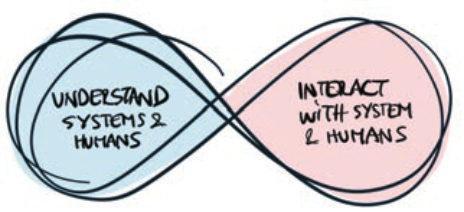
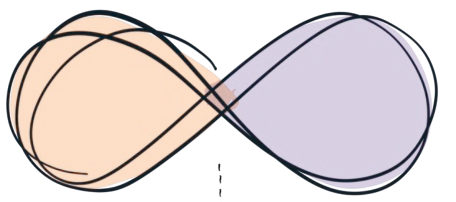
individuell, social, relationell process
Men, det går inte att driva och navigera transformation utan fokus på de människor som driver och på olika sätt är inblandade – snarare är detta helt centralt. I kapitel 4 tog vi därför upp vikten av att fokusera på människor eftersom transformation sker genom handlingar utförda av människor av kött och blod, med erfarenheter, relationer, känslor, hopp, oro, nätverk, påhittighet, jävlar anamma. Det handlar om dig själv, de du gör något tillsammans med, och de du vill få med dig.
Vi föreslog där ett perspektiv på transformation som en inre och social utvecklingsresa som behöver vara meningsfull för att vi ska kunna använda vår kraft till fullo och bättre stå ut med det som skaver. Den sociala aspekten innebär att man agerar i sammanhang med likasinnade för att samlära och samskapa, och att de sociala sammanhangen i sin tur kan skapa en känsla av mening (se t. ex. exemplet med BTS ARMY som kulturell gräsrotsrörelse i kapitel 4).
Viktigt att ha med båda perspektiven
På nästa sida summerar vi de här två perspektiven i en bild som får tjäna som påminnelse om att det är nog så viktigt att fokusera på de inre och sociala aspekterna, som på de design- eller utvecklingsprocesser som ofta är enklare att beskriva och ta på. Och som kanske är de som oftast är i fokus när man vill utbilda och lära kring transformation.
Att ha båda skeenden i fokus gör att vi kan tänka annorlunda kring vad som behövs för att katalysera transformation – kanske är det inte en kurs i system-kartläggning, eller nya kreativa metoder som behövs. Kanske behöver vi istället fler sätt för människor att mötas i ärlig dialog, eller för en organisation att ge sina medarbetare det utrymme de behöver för att gå utanför det vanliga.
Reflektiv/iterativ process kopplad till systemutmaningarna
- Förstå: Förstå system och mänskliga behov, utforska problem i lokal kontext (hävstångspunkter, designmönster).
- Göra: interagera med systemet genom att jobba i möjlighetsfickor eller möjliggöra på andra sätt. Växa och återbruka, kompostera.
Individuell/kollektiv process kopplat till människorna som deltar
- Individuell – utforska individuella drivkrafter, motivation, påverkans-sammanhang och behov
- Kollektiv – Grupper / sammanhang för gemensamt utforskande, med gemensamma drivkrafter och möjligheter att påverka, där framväxande egenskaper, erfarenheter och möjligheter uppstår.
- Relationell: Utveckling av tillitsfulla relationer som tillåter oss att lära tillsammans genom att vara sårbara och starka, misslyckas och lyckas.
Vad händer i ”midjorna” när vi kopplar allt detta samman? Det är ett kontinuerligt omformulerande och omförhandlande, genom sensemaking och meaningmaking:
- Omformulering av problem och insikter, mening och sammanhang (kapitel 5).
- Framväxande kompromisser mellan hävstångspunkter, möjlighetsfickor, etisk kompass (kapitel 6).
- Omformuleringar som kopplar till att vara: vad som engagerar, vad man orkar, ihop med vem – individuellt och i grupp (kapitel 4).
Sammanfogat: en social, systemutforskande
process
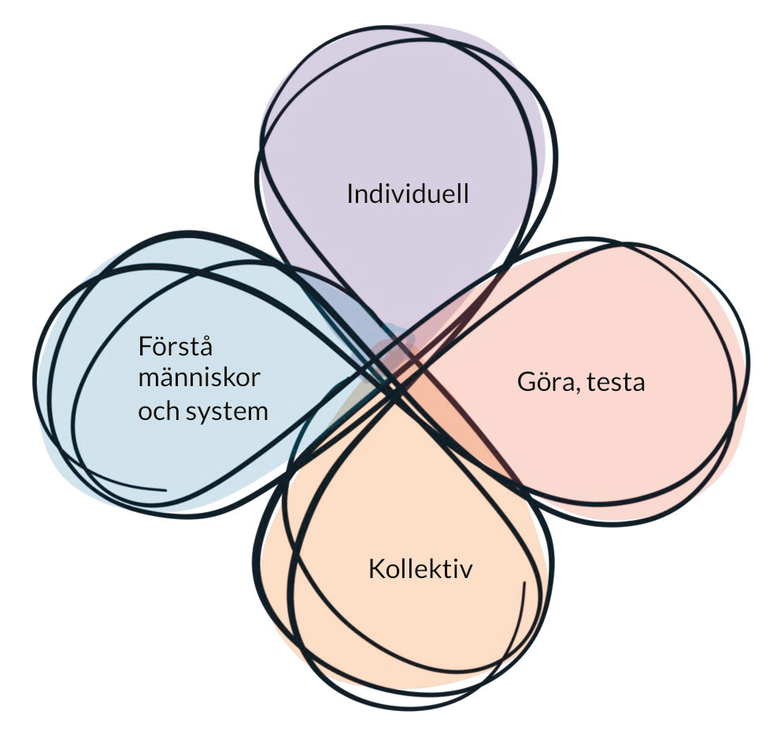
Härnäst ger vi exempel på hur en organisk förändringsresa kan se ut med fokus på båda dessa perspektiv, samt allmänna tips.
Kapitel 7 tar sedan upp det som händer i organisationer under transformation – där mycket handlar om just den mänskliga dimensionen, men ur organisations- och ledarskapsperspektiv.
Exempel: En organisk förändringsresa katalyserad av nyfikenhet
”Börja med dem som är öppna och som vill. Utveckla små prototyper, och börja sprida dem. Ofta reagerar andra delar av systemet med: ’Varför vill alla arbeta just här, på det här sättet?’ Man börjar få uppmärksamhet, och fler vill vara med.”
Christi Zuber, grundare av Aspen Labs – ett nätverk för designdriven innovation i komplexa system.
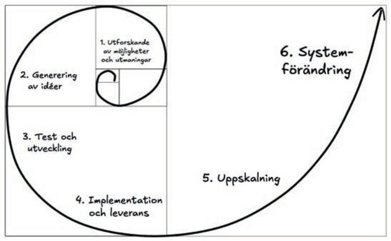
Övriga tips för pionjärer och förändringsledare – utforskandet i praktiken
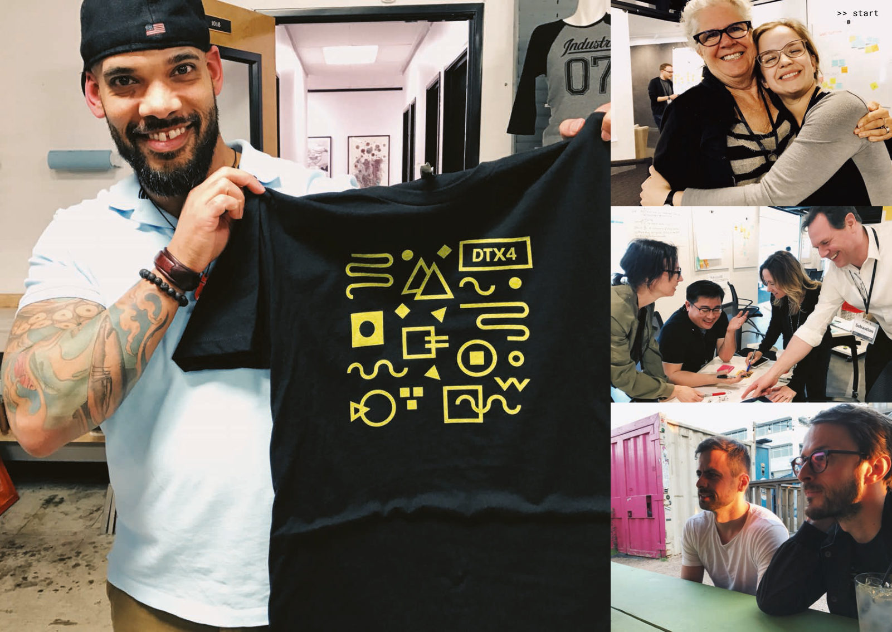
Pionjärer kan med fördel skapa eller söka sammanhang där de kan träffa andra för att jubla, sucka, stötta, få inspiration att tänka annorlunda. Gnistan är viktig.